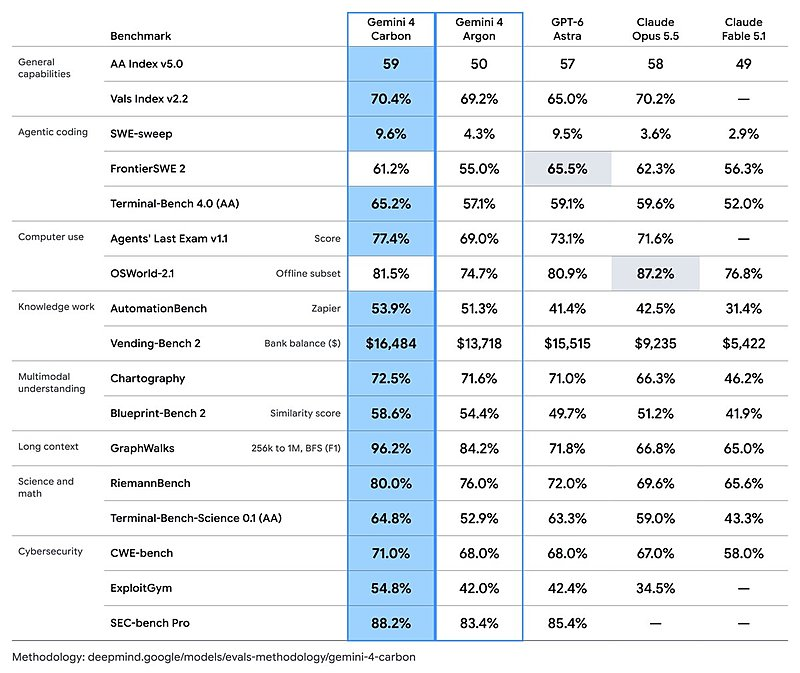

AI 日报 · 10月30日
前沿模型加速，验证与边界同步前移
Google 将 Gemini 4 Carbon 先交给少数网络防御者测试，Mistral 发布 Large 4 的更新权重；OpenAI 更新 Model Spec 与模型行为监测说明。Builder 的讨论把注意力从榜单拉回部署、验证和人的判断。
模型发布
网络防御
开放权重
Agent 治理
4
Builder 动态
3
今日上榜项目
4
重点原文
1
公开视频
今日要点
性能数字来自 Google 发布，开放范围仍有限
Google 10 月 28 日公布 Gemini 4 Carbon，称其在漏洞发现、验证和修补任务上取得进展。官方列出的 SEC-bench Pro、ExploitGym、CWE-bench 成绩分别为 88.2%、54.8%、71.0%；这些是指定评测设置下的结果。模型本周先向少数网络防御者开放，面向普通开发者与消费者的推出时间尚未确定。
从公开预览走到可获取权重
Mistral 10 月 29 日发布继续训练后的 Large 4 权重，并称编码和防御安全能力较预览版提升，同时提供低、中、高三档推理模式。文中的领先排名与效率数字来自厂商和其引用的评测，应结合任务、授权和实际运行成本自行复核。
深度对话
AI 能否做出好作品？先写清自己的观点
Every 的《AI & I》10 月 29 日发布 Natalia Quintero 对 Fred Graver 的访谈。以下依据 follow-builders 提供的节目逐字稿和 Every 原频道视频概括，不把嘉宾的创作判断当作行业定论。
先定义创作者身份
Graver 建议写一份“我是谁、我想写什么”的材料，再让 AI 参与讨论；创作方向应先由人提出。
把模型当作编剧室成员
他描述用 AI 帮助构思、质疑和组织制作流程，而非把整件作品一次性交给模型生成。
发行仍是难题
访谈把创意、制作、传播视作相互反馈的循环，并讨论独立创作者如何找到受众。
资讯精选
模型之外，规则与路由也在更新
OpenAI｜Model Spec 改以五项价值组织
10 月 29 日更新把忠于人的意图、减少伤害、诚实透明、人的自主性和关怀列为核心价值；原文明确说这是希望模型达到的行为目标，现有模型尚未完全实现。
Vercel｜AI Gateway 支持虚拟模型
10 月 28 日推出的自定义模型标识可集中保存底层模型、路由、回退和合规选项，应用可继续使用同一标识而无需因模型切换重新部署。
已检查 feeds.json 的四条中文 RSS：10 月 30 日上午均无当日新文；AI 前线 10 月 29 日报道 Carbon。以下采用厂商一手发布，标明原始日期。
Builder 动态
模型发布之后，开发者在问什么
Josh Woodward｜Carbon 先给网络防御者
Google 产品负责人指出 Argon 与 Carbon 相隔约两周，并强调 Carbon 先面向网络防御者，之后才逐步扩大范围。配图为原帖附带的基准表；分数仍以官方方法和后续独立复测为准。

Guillermo Rauch｜模型别名可集中切换路由
Vercel CEO 把虚拟模型比作模型的 DNS：应用调用稳定别名，团队在网关侧调整底层模型和流量路由。具体能力以 Vercel 发布说明为准。
Boris Cherny｜分享 Utah 开发者试点
Boris 转述 Utah 州跨机构 Claude Code 试点的环境搭建和节省时间反馈。原帖给出参与者自报比例；它说明试点经验，不能外推成所有政府开发团队的效果。
Thariq｜创作者需要表达草图的语言
Thariq 说自己希望能先勾画动画和角色概念，再交给 Agent 细化；他的困难是找不到足够准确的描述语言。这与今日访谈里“人先提出观点”的讨论相呼应。
GitHub Trending
学习、创作与可审计的 Agent 工作台


取 10 月 30 日 GitHub Trending 实时榜单，避开近两期重复项目。星标、分叉、语言和主题为本次 GitHub API 快照；功能描述来自仓库自述，尚未独立测评。
今日思考
Carbon 与 Large 4 都给出了更强能力的厂商证据，但一个仍限量开放，一个刚发布更新权重；OpenAI 的 Model Spec 和监测文章则提醒我们，模型行为需要可解释的边界和可观察的行动。创作访谈给出另一条线索：工具能扩展产能，目标和判断仍要有人提出。今日一问：如果明天换上更强的模型，你的任务验收、权限范围和回退步骤会随之改变吗？
参考来源
Google｜Gemini 4 Carbon 发布
Mistral｜Large 4 更新权重发布
OpenAI｜Model Spec 更新
OpenAI｜前沿模型行为监测
Vercel｜虚拟模型发布
Every｜Fred Graver 原频道访谈
Josh Woodward｜Carbon 原帖
Guillermo Rauch｜虚拟模型原帖
Boris Cherny｜Utah 试点原帖
Thariq｜创作表达原帖
GitHub｜10 月 30 日 Trending
HKUDS/DeepTutor
Donchitos/Claude-Code-Game-Studios
CopilotKit/OpenBot